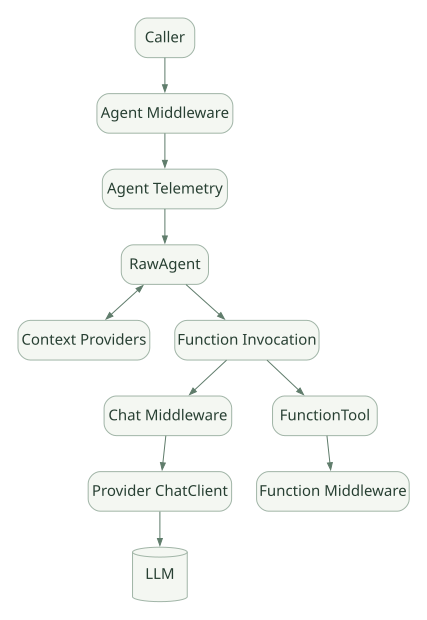

SECOND STUDY / Agent·Context·Tool Loop
Agent·Context·Tool Loop
이번 단원의 읽는 관점
RawAgent의 입력 준비와 Provider, ChatClient의 모델·도구 반복을 연결합니다.
살펴볼 경계Provider 후처리의 실행 단위와 Tool Loop의 반복 단위를 구분하세요.
이 페이지의 세부 목차
Part II. Agent 파이프라인 내부
5. Agent 클래스의 다층 합성#
공식 Pipeline 설명은 Agent의 바깥쪽에 Middleware + Telemetry, 가운데 RawAgent, 안쪽에 Context Provider와 ChatClient를 둔다. ChatClient에는 Function Invocation, Chat Middleware, 실제 Provider 클라이언트가 결합된다. [D01]
가로로 이동해서 읽을 수 있습니다. 도식 크게 보기 ↗

원문의 학습용 도식입니다. 연결 방향·분기 조건·점선·쌍방향 연결을 보존해 세로로 배치했습니다. 실제 구현·의사코드·해석의 구분은 본문을 함께 읽으세요.
도식 원문 보기 (Mermaid)
flowchart LR
A[Caller] --> AM[Agent Middleware]
AM --> OT[Agent Telemetry]
OT --> RA[RawAgent]
RA <--> CP[Context Providers]
RA --> FI[Function Invocation]
FI --> CM[Chat Middleware]
CM --> PC[Provider ChatClient]
PC --> LLM[(LLM)]
FI --> FT[FunctionTool]
FT --> FM[Function Middleware]이 그림에서 FunctionMiddleware가 Tool 이전/이후에 관여하고, ChatMiddleware는 모델 호출마다 관여한다. 메서드별 감싸기 순서는 실제 소스의 조합 순서와 Pipeline을 따로 확인해야 한다. 단지 Middleware 리스트의 순서만 보고 ‘정확히 이 순서’라고 추정하지 않는다. [D01][S04]
5.1 BaseAgent와 RawAgent#
BaseAgent는 공통 Session·Context·관리 유틸리티를 제공하고, RawAgent는 ChatClient를 사용하는 핵심 실행 구성이다. Agent는 표준 Layer를 합성한 공개 사용 진입점이다. [S01]
[PSEUDO] 계층적인 책임을 표현한 예:
async def agent_run(messages, session):
# AgentMiddleware / Telemetry
context = await gather_context(messages, session) # RawAgent / providers
response = await chat_client.get_response(context.messages, tools=context.tools)
await persist_context_and_history(session, response)
return to_agent_response(response)이는 원본 함수의 직역이 아니다. 의사코드에 쓰인 gather_context 같은 식별자는 설명 편의를 위한 이름이다. 실제 메서드는 [S01]의 RawAgent, [S05]의 Session Provider 메서드에서 추적한다.
5.2 Agent가 모델을 직접 반복 호출하는가?#
일반 Agent는 주로 컨텍스트 설정·호출·응답 결합을 담당하고, 여러 Function Call에 따른 모델 재호출은 ChatClient의 Function Invocation 계층이 수행한다. 이것이 MAF 설계의 중요한 경계다. [D01]
장점 [INF]: ChatClient를 직접 사용하는 코드에서도 Tool 자동 호출 로직을 재사용할 수 있고, Provider 교체를 쉽게 한다. 단점 [INF]: 핵심 루프가 Agent 객체가 아닌 여러 Layer에 분산돼 처음 디버깅하는 개발자가 호출 경로를 찾기 어렵다.
6. Context Provider와 History: 실제 호출 지점#
ContextProvider는 Run 전후로 컨텍스트를 추가하거나 후처리한다. HistoryProvider는 대화 이력을 읽고/저장하기 위한 특화된 공급자다. InMemoryHistoryProvider는 로컬 대화 기록을 유지한다. [D04][S05]
6.1 단계별 상태#
| 시점 | 입력 | 출력/변경 가능 상태 | 실패 시 질문 |
|---|---|---|---|
before_run |
현재 메시지, AgentSession | 검색 결과·Instruction·Tool·History 주입 | 검색 실패로 실행 중단할지? |
| 모델/Tool 실행 | Context+Tool 집합 | 새 메시지 및 결과 | 여러 Tool 중 하나 실패 시? |
after_run |
응답, SessionContext | History·외부 Memory·감사 로그 쓰기 | 저장 실패했는데 답변은 성공했나? |
| Harness 내 반복 | 같은 상위 요청의 여러 내부 반복 | 실행별/턴별 저장 정책 | 대화가 중복 저장되지 않는가? |
태그 코드의 [S01], [S05]에는 Provider 실행 후처리와 턴당 한 번 vs 각 실행마다 실행할 작업을 구분하는 경로가 있다. 이 차이를 무시하고 후처리를 매 Tool Loop마다 호출하는 것으로 그리면 부정확하다. [SRC]
6.2 ‘Memory’를 모델에 넣을 때 주의#
대화 기록을 모조리 모델에 넣는 것은 Memory라기보다 History Replay에 가깝다. Memory는 파일, 구조화된 키/값, 검색 서비스 등의 지속 저장소에서 선별·검색·주입하는 기능까지 포함할 수 있다. 사내 문서에서 검색된 텍스트는 모델을 위한 참고 데이터일 뿐, 상위 Instruction으로 취급해서는 안 된다. [D04][D10]
7. ChatClient / Function Invocation: 실제 Tool Loop#
7.1 모델이 함수를 실행한다는 표현의 오류#
모델은 Tool을 실제 실행하지 않는다. 모델은 function_name + arguments에 해당하는 Tool Call을 요청하고, 애플리케이션의 Function Invocation 계층이 등록된 Tool을 찾아 실행한 다음 결과를 메시지로 되돌려 준다. [D01][S03]
[PSEUDO] 일반화된 Function Invocation 흐름:
async def invoke_until_final(messages, tools, max_calls):
for _ in range(max_calls):
response = await model(messages, schemas_of(tools))
calls = extract_local_function_calls(response)
if not calls:
return response
results = await invoke_registered_tools_with_policies(calls)
messages += [response, *to_function_result_messages(results)]
raise ToolLoopBudgetExceeded() # 실제 SDK의 예외명 아님위 코드는 원리 설명용이며 실제 FunctionInvocation 루프의 조건, max_calls 이름, 예외명과 일치한다고 주장하지 않는다. 구체적인 한도는 공개 API/Layer 코드에서 확인해야 한다. [S02][S03]
7.2 코드 추적에서 꼭 확인할 다섯 단계#
- 도구 노출: Tool 정의에서 모델에 전달할 JSON Schema가 어떻게 만들어지는가?
- 응답 파싱: Provider가 반환한 Tool Call이 어떤 공통 Content/Message 형태로 변환되는가?
- 등록 매칭: Function 이름·ID·입력 인자를 어떻게 연결하는가?
- 검증 및 Middleware: 함수가 실행되기 전에 승인/인자 정책/스키마 검증을 어느 순서로 수행하는가?
- 결과 반영: 성공·오류·승인 요청을 어떤 타입으로 전환해서 모델 또는 호출자에게 반환하는가?
FunctionTool은 자동 JSON Schema 생성과 인자 검증을 제공한다. 특히 추론된/Pydantic 입력 모델과 사용자가 직접 넣은 JSON Schema 매핑의 검증 강도가 동일하지 않다. 사용자 제공 Schema의 경량 검증을 프레임워크가 완전한 보안 검증으로 수행한다고 오해하면 안 된다. [S03]